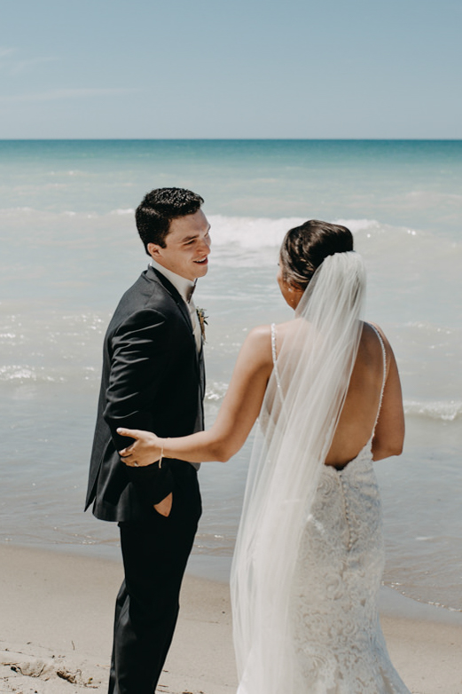

THE MORNING
I love being there with your on the morning of your wedding day. Capturing those moments is such a fun and creative part of the day for me! Plus, I get to spend the morning getting to know you, your best friends and family before we head out for a full day of celebration! Here are a few things that help me capture the best possible images during your getting ready:
- If you’re getting ready somewhere other than your home, I always encourage to rent an airbnb over a hotel room. Airbnbs typically have better light, a more creative interior, and more space for everyone to move around - and it’s typically cheaper! Look for a location with lots of natural light and one that is clutter-free. I’m happy to suggest a few spots if you need! If a hotel room is still your best option, that’s okay! Your photos will turn out beautifully no matter what.
- Wherever you choose to get ready, try to keep it clutter-free as much as possible! Usually when I arrive, I de-clutter a little and move around some furniture like lamps to make the space look photo-ready.
- Ask your makeup-artist & hair stylist to get you ready beside a window! Window light makes for more flattering photos than poorly lit bathroom with artificial light. I typically turn off any lights and open up the blinds/curtains so that we get as much of that natural glow as possible.
- Play some music in the morning! Nothing helps relax people more than having a good playlist going.


FIRST LOOK
A first look is when you and your partner see each other for the first time before the walking down the aisle. It’s easily one of the most emotional and intimate parts of the day and many couples choose to go this non-traditional route for a number of reasons!
- Seeing each other before means you will be able to have that private moment together to tell your partner how great they look and how much you love them. It helps you feel relaxed, calm and have a quiet moment with the person you love before the major events of the day
- My preference is to have the first look be just you, your partner and myself. If you want your family and bridal party to be involved in this moment, I would recommend having a first look with them separately, versus having everyone watch this special moment with your partner.
- The timelines for the day are much easier to work with when you have already seen each other before the ceremony! It means we can get your couples portraits and family portraits done when everyone’s makeup is still fresh, and you get to enjoy your cocktail hour without worrying about photography.
- If you’d still like to go the traditional route of seeing your partner for the first time walking down the aisle - that’s cool too! You can also have bit of both worlds. By having the groom facing away from you at the front of the aisle, you can walk down and when you’re at the middle of the aisle, he can turn around to see you. This has worked really well, too!
PORTRAITS
This is the part where we get to let go, have fun, and get creative together! Here are a few tips to make this time easy and fun:
- I always request 30 minutes - 1 hour of couples portrait time. If you have a location in mind outside of the venue, take into account the travel time!
- I won’t be posing you very rigidly, so feel free to be as silly, energetic, or quiet as you’d like. I will be giving you a bit of direction to make sure your connection with your partner shines through!
- Bring a pair of cute keds, converse or hiking boots with you (or go barefoot)! I love to get a little adventurous with my couples and having a good pair of flat shoes really helps with that. We get to run around, spin, dance, and reach pretty spots that heels wouldn’t allow us to.
- Sunset and twilight time are my favourite time to take photos! I’d love to sneak you out for 10 - 15 minutes during sunset so we can get you some of those glowy, golden shots you see a lot in my work. Or - if your schedule allows for it, we can do the entire portrait session during this time instead of during the day!
- Rain or shine, I love to take photos! If it’s a rainy, overcast day - not to worry. Your images will turn out beautifully and I actually prefer gloomy weather over a bright sunny day because the light is soft and pretty. I have special umbrellas we can use, and if you’re really not up for goingout in the rain we can find a nice spot to take pictures indoors - it’s your call! Ask me to show you weddings I’ve shot in the rain so you could get an idea of what goes on.
CEREMONY
OUTDOOR CEREMONIES:
- If you’re having your ceremony in the morning or middle of the day when the sun is really bright, try to have it in the shade! Not only will it be easier on you, your partner, and your guests as there won’t be any squinting, but it will also make for better photos because the light will be even and flattering. If it’s not possible to place your entire ceremony in the shade (I know there can be lots of guests!), then try to make sure at least you, your partner, officiant and bridal party are in the shade.
- If you’re having an afternoon/evening/sunset ceremony, try to have the ceremony facing in the direction where the sun is behind you. The picture to the left is a perfect example of this! The sun is setting behind the bride and groom, giving them that magical glow.
INDOOR CEREMONIES:
- If you have some flexibility with your indoor space, take advantage of the natural light! Placing your ceremony in a space with lots of windows will help ensure for flattering photos. When deciding on how to position everything, try to have the window light coming in from the sides (left and right), or from the behind the guests directly lighting you. If there is only light coming from behind you and your partner indoors, your guests will be beautifully lit, but you, your partner, and bridal party will be a bit darker. No matter what your light situation is - I can always make it work! These are simply tips.
FAMILY AND WEDDING PARTY PORTRAITS
FAMILY:
- I always ask for a family shot list (names and groupings you would like) so I can have it with me during the day! This helps ensure we don’t miss anyone you’d like to get a picture with. If you’re just doing immediate family, I ask for 20 minutes. If it’s extended family, then 30 - 40 minutes is enough time! I encourage to keep family shot lists limited to 10 different groupings! That way we can keep things simple and efficient.
- Once I arrive to the venue, I’ll find a good spot for family portraits to happen. I’ll let you know where that will be so that the meeting spot can be announced to your relatives.
WEDDING PARTY:
- I love to get fun and creative with your bridal party! I usually encourage leaving 20 minutes for pictures of you and your squad.
- Typically I like to do bridal party shots at the venue, especially if it’s a big group. That way everyone can go enjoy cocktail hour and mingle. However, if your bridal party would like to tag along to the portrait location instead, I’ll get all those shots done first and then sneak you and your partner away for some portraits while your bridal party hangs out.

©2018 Sage & Sea Co. All Rights Reserved.
Destination Photography, Destination Videography, Destination Photographer, Destination Videographer, Destination Photographers, Destination Videographers, Bruce County Photography, Bruce County Photographer, Bruce County Videography, Bruce County Videographer, Saugeen Shores Photography, Saugeen Shores Videography, Port Elgin Photography, Port Elgin Photographer, Port Elgin Wedding Photographer, Port Elgin Wedding Photography, Port Elgin Videography, Port Elgin Videographer, Port Elgin Wedding Videographer, Port Elgin Wedding Videography, Southampton Photography, Southampton Videography, Ontario Photographer, Ontario Wedding Photographer, Ontario Wedding Photography, Ontario Videography, Ontario Videographer, Ontario Wedding Videographer Wedding photography, wedding videography, wedding vidographer, wedding photographer, wedding video, wedding photo, professional photographer, professional videographer, photo, video, drone, drone phtoography, drone videography, drone photo, drone video. Mildmay, Mildmay photographer, Paisley, Paisley photographer, Tara, Tara photographer, Bruce County, Bruce County photographer, Grey County, Grey County phtoographer, Owen Sound Videography, Owen Sound Videographer, Owen Sound Wedding Videographer, Owen Sound Wedding Videography, Sauble Beach, Sauble Beach photographer, Kincardine Videography, Kincardine Videographer, Kincardine Wedding Videographer, Kincardine Wedding Videography,